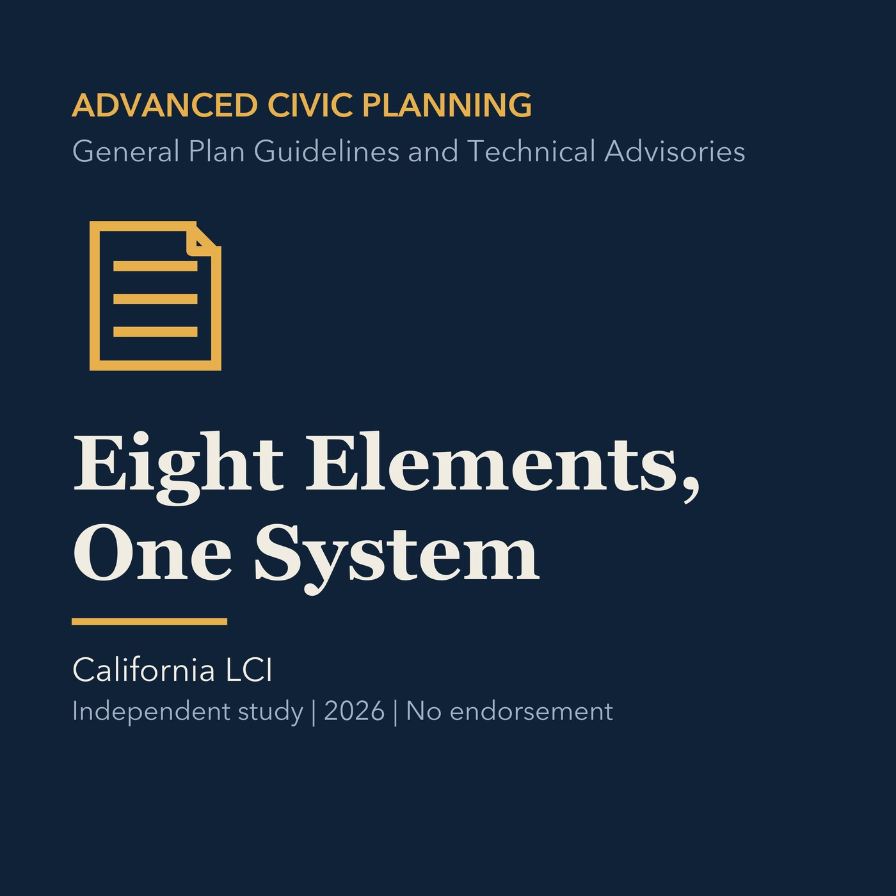

EPISODE 11
Eight Elements, One System
Explains how California general plan elements interact instead of operating as separate documents.

- Stable GUID
161cd586-13e4-5fae-8371-4d5110184ca7- Release
- advanced-civic-planning-v2026.1
- SHA-256
fff3ad799cf304a91223b1b649818b3e3a77a41ab84da8dc1dcb7f6c7e8801d7